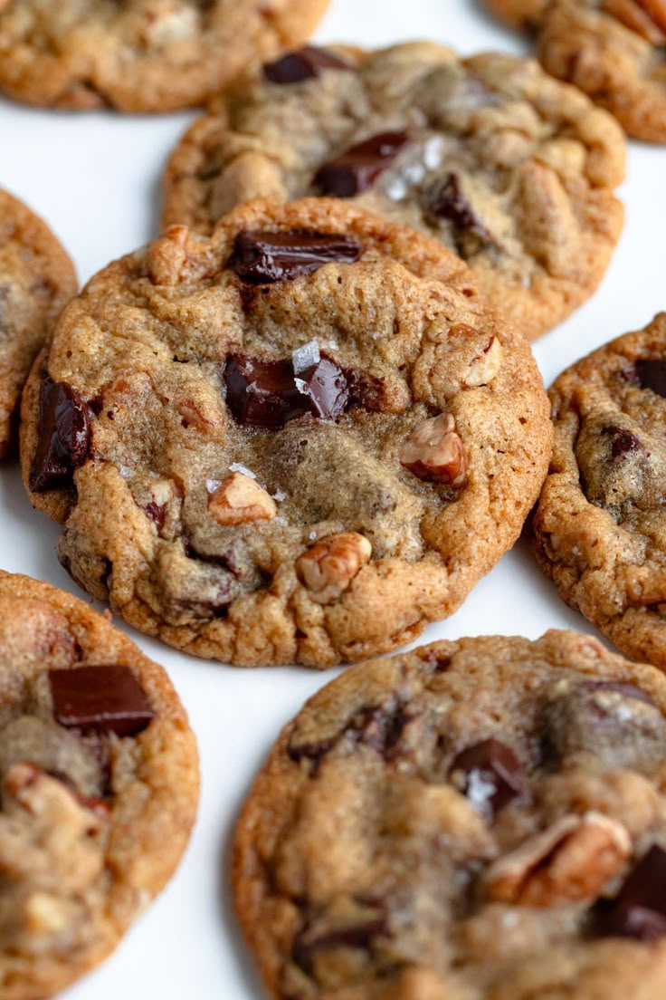

Chocalate Chip Cookies

Copyright: © 2023, Cheryl Norris
A recipe to make dozens of delicius chocolate chip cookies with
crisp edges and chewy middles
This recipe delivers the ultimate cookie texture: soft and chewy on the
inside with a slightly crisp, golden edge. The dough, enhanced with vanilla,
is the perfect base for generous handfuls of semisweet chocolate chips.
It’s a simple, reliable recipe for making the best chocolate chip cookies every single time.
Making bakery-worthy chocolate chip cookies is much easier than it seems. You'll find a detailed ingredient list
and step-by-step instructions in the recipe below:
Ingredients
-
Butter: This classic chocolate chip cookie recipe starts with two sticks of butter creamed
with white and brown sugars. The blend of sugars creates a perfectly balanced flavor.
-
Eggs: Eggs add moisture and act as a binding agent, which means they help
hold the dough together.
-
Vanilla: Vanilla extract enhances the overall flavor of the chocolate chip cookies.
-
Baking Soda: Baking soda acts as a leavener, which means it helps the cookies rise.
-
Water: A bit of hot water creates steam as it bakes, working with the
baking soda to puff the cookies up.
-
Salt: A pinch of salt enhances the flavors of the other ingredients,
but it won't make the cookies taste salty.
-
Flour: All-purpose flour helps create gluten, which adds structure to
the cookie dough.
-
Chocolate Chips: Of course, you'll need semisweet chocolate chips!
You can use dark or milk chocolate chips if you prefer.
-
Nuts (Optional): Walnuts are optional, but they add nutty flavor and a
welcome crunch.
Ingredients quantity
- 1 cup butter, softened
- 1 cup white sugar
- 1 cup packed brown sugar
- 2 large eggs
- 2 teaspoons vanilla extract
- 1 teaspoon baking soda
- 2 teaspoons hot water
- ½ teaspoon salt
- 3 cups all-purpose flour
- 2 cups semisweet chocolate chips
- 1 cup chopped walnuts
Steps
-
Gather your ingredients, making sure your butter is softened,
and your eggs are room temperature.
-
Preheat the oven to 350 degrees F (175 degrees C). Beat butter, white sugar,
and brown sugar in a large bowl with an electric mixer until smooth and creamy.
- Beat in eggs, one at a time, then stir in vanilla.
- Dissolve baking soda in hot water; add to batter along with salt and mix until combined.
- Stir in flour, chocolate chips, and walnuts until a soft dough forms.
- Drop rounded spoonfuls of cookie dough 2 inches apart onto ungreased baking sheets.
- Bake in the preheated oven until edges are lightly browned, about 10 minutes.
- Cool on the baking sheets briefly before removing to a wire rack to cool completely.
- Store in an airtight container or serve immediately and enjoy!
Home